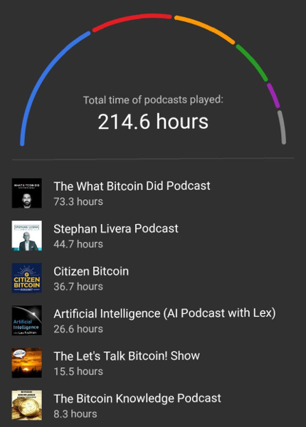

Why?
I want to live in the world where people have control over and responsibility for what they value
How?
Educate people how to possess and operate with bitcoin securely and privately
What?
The club
I want to build a club
I have been learning bitcoin for 2.5 years
My statistic of listening to bitcoin podcasts

Meeting every two weeks